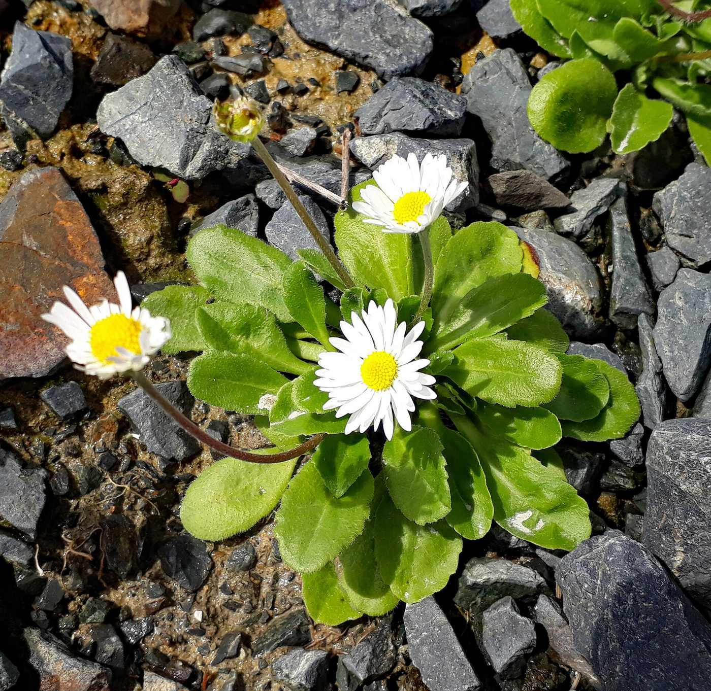
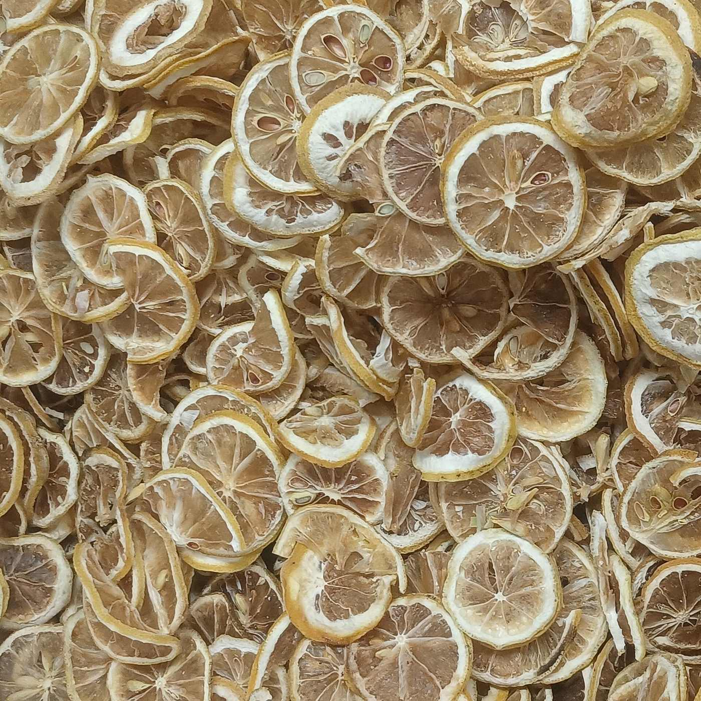

制作側の連想
ワープロ専用機の部位を、配置図にしてみる
このサイトは、昔ながらの文書作成用の機械を図にしたつもりで作りました。六つの部位に番号をふり、上の図と並べています。制作側の連想で、お店の理念・由来とは無関係です。実際の機種の仕様を示すものでもありません。
凡例
六つの部位
- 1液晶表示窓文字を映し出す、横長の小さな画面。
- 2キーボード文字を打ち込むための、ずらりと並んだキー。
- 3フロッピーディスク挿入口文書を出し入れするための、細い差し込み口。
- 4排紙口印字した紙が出てくる、本体上部の細い口。
- 5ファンクションキー機能を呼び出す、キーボードの上段のキー。
- 6電源スイッチ本体の入り・切りを切り替える、小さなスイッチ。
ギャラリー(イメージ)
フリー素材の写真から




写真はイメージです。お店のものではなく、お店で提供している商品を示すものでもありません。
ご案内
お店のこと(確認できたものだけ)
| 所在地 | 〒294-0045 千葉県館山市北条2416-22 |
|---|---|
| 電話 | 準備中 |
| 営業時間 | 準備中 |
| 定休日 | 準備中 |
| ご予約 | 準備中 |
| 駐車場 | 準備中 |
| SNS | Instagram @b.surje |